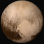

| Venus | Mars | Moon | Pluto | |
|---|---|---|---|---|
| Image of the planet |  | |||
| Gravity (m/s²) | 8.9 | 3.7 | 1.6 | 0.7 |
| Rotation Period (hrs) | -5832.5 | 24.6 | 655.7 | -153.3 |
| Length of Day (hrs) | 2802.0 | 24.7 | 708.7 | 153.3 |
| Orbital Period (days) | 224.7 | 687.0 | 27.3* | 90,560 |
| Mean Temperature (C) | 464 | -65 | -20 | -225 |
| Number of Moons | 0 | 2 | 0 | 5 |
| Global Magnetic Field? | No | No | No | Unknown |
*For the Moon, the sidereal orbit period, the time to orbit once relative to the fixed background stars, is given. The time from full Moon to full Moon, or synodic period, is 29.53 days. For Pluto, the tropical orbit period is not well known, the sidereal orbit period is used.